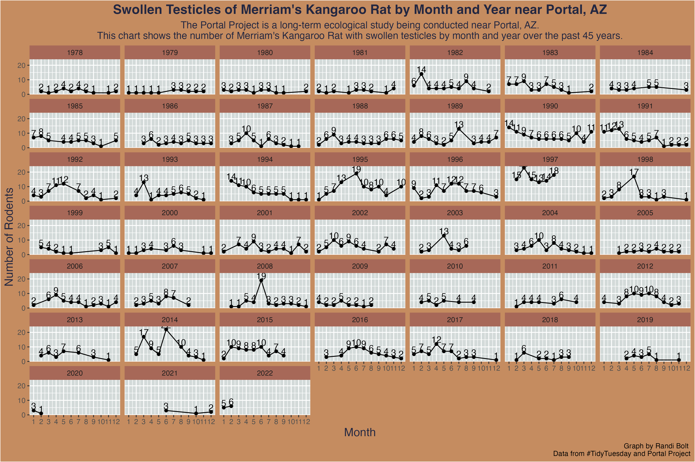

In this post, I will guide you through the process of creating a data visualization for the Portal Project’s #TidyTuesday1 challenge in Week 18 of 2023.

Introduction
The Portal Project is a long-term ecological study being conducted near Portal, AZ. Since 1977, the site has been used to study the interactions among rodents, ants and plants and their respective responses to climate. To study the interactions among organisms, they experimentally manipulate access to 24 study plots. This study has produced over 100 scientific papers and is one of the longest running ecological studies in the U.S.2
This post will follow a similar format to what is presented in Rohan Alexander’s Book Telling Stories with Data. We will start with a plan of how the data and graph should look. Then simulate the data and visualization. Next we will acquire and clean the data, explore the data by creating the visual, and lastly share the data by saving it.
Show Preamble
#### Preamble ##### Purpose: Read in data from csv and make a# graph of swollen testicles by month and year# of the AZ Merriam Kangaroo Rat.# Author: Randi Bolt# Email: randibolt93@gmail.com# Date: 2 May 2023# Prerequisites: -#### Workspace setup ####base::library(tidyverse) # A collection of data-related packages
1. Plan
To start, we need to think about two things: What the data should look like, and what the graph should look like.
🐀 Simulated Data
Show Code for Simulted Data
#### Simulated Data ##### Includes:# - years between 1978 and 2022# - months between 1 and 12# - n between 1 and 20df <- base::data.frame("year"= base::sample(c(1978:2022),size =399,replace =TRUE),"month"= base::sample(c(1,2,3,4,5,6,7,8,9,10,11,12),size =399,replace =TRUE),"n"= base::sample(c(1:20),size =399,replace =TRUE ))utils::head(df)
#### Graph Function ##### A function that takes in a df,# and outputs a graph.# # @param df is a dataframe with that # include month, year, and n. # @return vis is a graph. ## Parts:# 1. Mapping # 2. Graph Geometries # 3. Facet Wrapvis <-function(df){ vis <- ggplot2::ggplot( df, # 1. Mappingmapping = ggplot2::aes(x = month,y = n,group = year) ) +# 2. Graph geoms ggplot2::geom_point() + ggplot2::geom_line() +# 3. Facet Wrap ggplot2::facet_wrap(~year)return(vis)}
Graph
Show Code for Sample Graph
vis(df)
2. Simulate
Since we’ve already simulated the data, and what we want our graph to look like above in the plan. All that’s left to simulate is a style function for our graph.
🐀 Style Function
Show Code for Style Function
#### Style Function ##### A function that inputs a graph, # and outputs a stylized graph. # # @param vis is a graph.# @return sty is a stylized graph.# # Parts: # 1. Title, subtitles, labels, caption, alt text.# 2. X and Y scale.# 3. Add values above points.# 4. Formatsty <-function(vis){ sty <- vis +# 1. Title, subtitles, labels, caption, alt text ggplot2::ggtitle("Swollen Testicles of Merriam's Kangaroo Rat by Month and Year near Portal, AZ") + ggplot2::labs(subtitle ="The Portal Project is a long-term ecological study being conducted near Portal, AZ.\nThis chart shows the number of Merriam's Kangaroo Rat with swollen testicles by month and year over the past 45 years.",x ="Month",y ="Number of Rodents",caption ="Graph by Randi Bolt \n Data from #TidyTuesday and Portal Project",alt ="This is a point and line graph showing swollen testicles of Merriam's Kangaroo Rat by months and year over the past 45 years. The x axis shows months, and the y axis shows number of rodents.") +# 2. x and y scale ggplot2::scale_x_continuous(breaks =seq(1,12,1)) + ggplot2::scale_y_continuous(breaks =seq(0,60,10)) +# 3. add values above points ggplot2::geom_text( ggplot2::aes(label = n,vjust =-0.2)) +# 4. format ggplot2::theme(# titleplot.title =element_text(size =16,face ="bold",color ="#232741",hjust = .5),# subtitleplot.subtitle =element_text(size =12,hjust = .5,color ="#232741"),# plot backgroundplot.background =element_rect(fill ="#C58C60"),# graph backgroundpanel.background =element_rect(fill ="#D3DAD9"),# x and y axis lablesaxis.title =element_text(size =14, color ="#232741"),# legend backgroundlegend.background =element_rect(fill ="#C58C60"),# facet graph titlesstrip.background =element_rect(fill ="#A76858"))return(sty)}
Stylized Graph
Show Code for Stylized Graph
sty(vis(df))
3. Aquire
Now to read in the data, and create a cleaning function.
🐀 Read Data
Show Code for Reading in the Data
#### Read in the data ####surveys <- readr::read_csv('https://raw.githubusercontent.com/rfordatascience/tidytuesday/master/data/2023/2023-05-02/surveys.csv')
🐀 Cleaning Function
Show Code for Cleaning Function
#### Cleaning Function ##### A function that takes in a df# and returns a clean df. ## @param data is a df.# @param clean is a clean df.## Parts: # 1. Select# 2. Filter # 3. Group# 4. Reframe# 5. Unique clean <-function(data){ clean <- data %>%# 1. Select dplyr::select( month, year, sex, testes, species) %>%# 2. Filter dplyr::filter( sex =="M", species =="DM", testes =="S") %>%# 3. Group dplyr::group_by( year, month) %>%# 4. Refremae dplyr::reframe(month = month,year = year,n =n()) %>%# 5. unique base::unique()return(clean)}